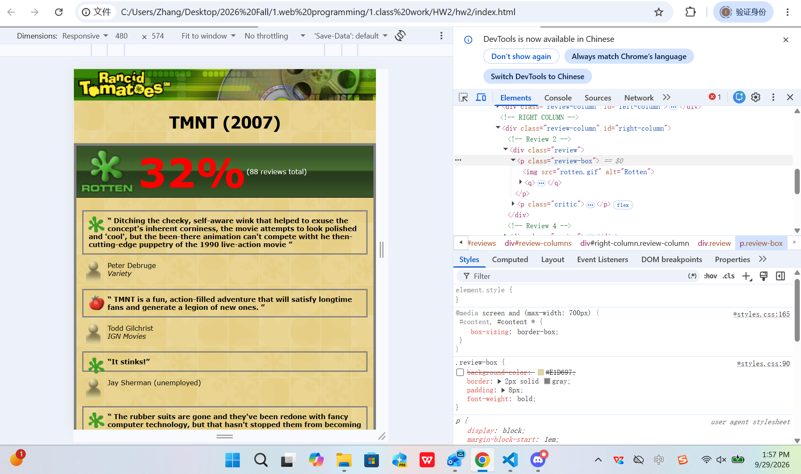
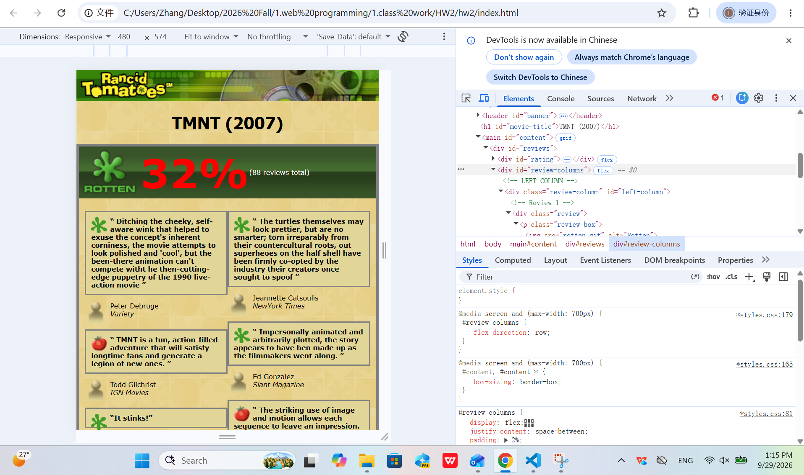
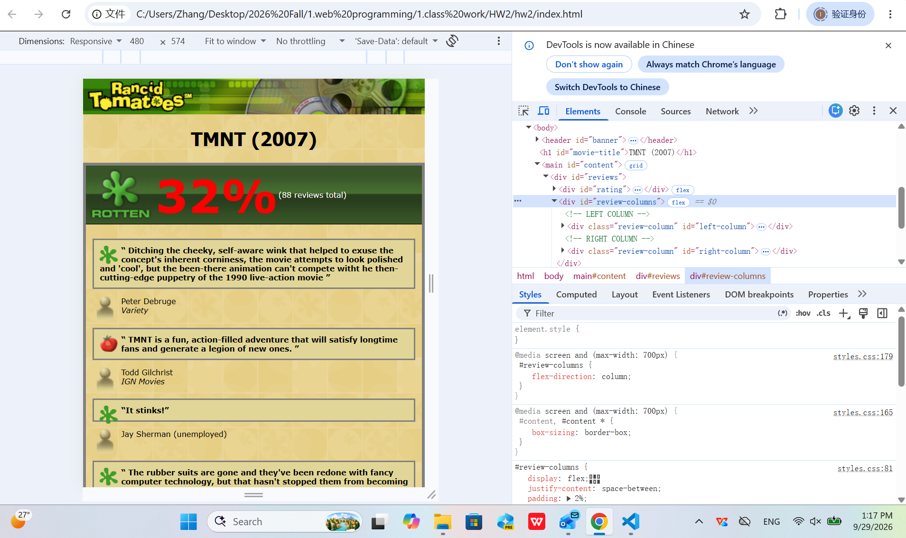
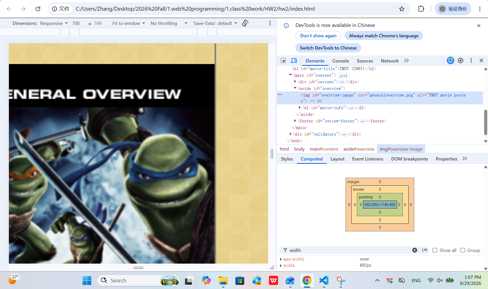
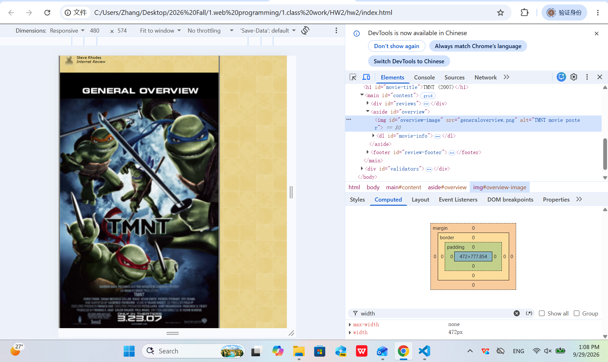
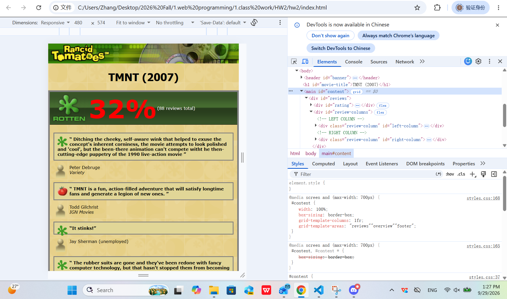
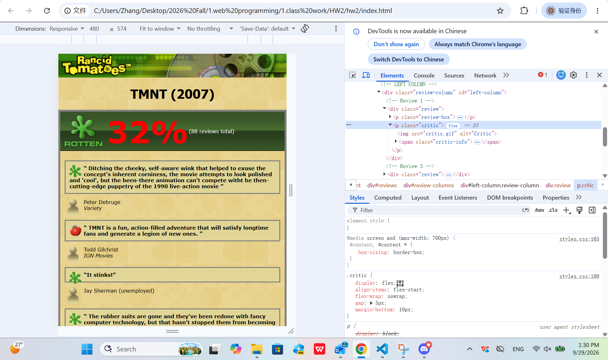
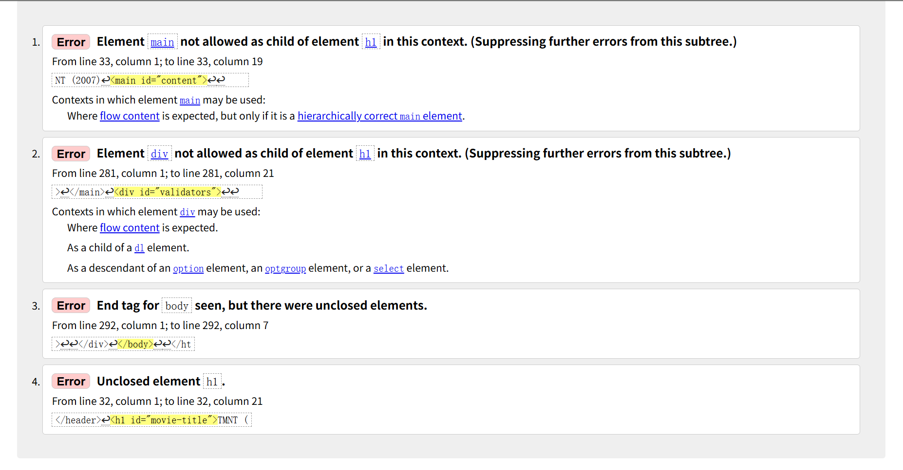

Q1 - Cascade Investigation
Investigation
I investigated the background of one review box using
Chrome DevTools. In my normal implementation, the
.review-box rule sets the background color
to #E1D697.
CSS Excerpt
.review-box {
background-color: #E1D697;
border: 2px solid gray;
padding: 8px;
font-weight: bold;
}The page background is defined separately on the body:
body {
margin: 0;
padding: 0;
background-image: url("background.png");
font-family: Verdana, Tahoma, sans-serif;
font-size: 8pt;
}Before
After

Explanation
Before the change, the class selector
.review-box directly paints the review box
with #E1D697. I temporarily disabled only
this declaration in Chrome DevTools. After it was
disabled, there was no competing author rule in my
stylesheet that supplied another background color to
the review box.
The review box therefore used its default transparent
background. Because the box became transparent, the
page background behind it became visible. The visible
image comes from the body's
background-image: url("background.png")
rule. The body background is not inherited as the
review box's background; it is visible through the
transparent box.
In terms of the cascade, the
.review-box class selector supplies the
author background-color declaration when that
declaration is enabled. After I disabled that
declaration, there was no later or more specific
background-color declaration for the review box to
replace it. I restored
background-color: #E1D697 after completing
the test.
Q2 - Responsive Trade-off
Computed Measurements at Exactly 480px
Viewport width: 480px
Main review region (#reviews): 472px
Sidebar (#overview): 472px
Overview image: 472px
At the 480px viewport, my content uses
box-sizing: border-box. The outer content
frame has a 4px border on both sides. This leaves 472px
inside the frame for the responsive content.
Responsive CSS Excerpt
@media screen and (max-width: 700px) {
#content,
#content * {
box-sizing: border-box;
}
#content {
width: 100%;
box-sizing: border-box;
grid-template-columns: 1fr;
grid-template-areas:
"reviews"
"overview"
"footer";
}
#review-columns {
flex-direction: column;
}
.review-column {
width: 100%;
}
#overview {
width: 100%;
}
#overview-image {
width: 100%;
max-width: none;
height: auto;
}
}
@media screen and (max-width: 480px) {
#movie-title {
font-size: 20pt;
}
}Controlled Layout Comparison
My deliberate trade-off is to stack the review columns vertically on smaller screens. This requires more vertical scrolling, but it gives each review more horizontal space and avoids squeezing two review columns into a narrow mobile viewport.
To test this decision, I temporarily changed
flex-direction from
column to row in Chrome
DevTools at exactly 480px. I did not save this change
to my final stylesheet.


The temporary row layout reduced the vertical length of
the review area, but each review became much narrower
and required more line wrapping. I kept
flex-direction: column as my final value
because readability is more important on the narrow
viewport. It also keeps the review content inside the
responsive frame without horizontal scrolling.
Q3 - Architecture Defense
Grid for the Major Content Frame
I used CSS Grid for the major page regions because the relationship between the reviews, overview, and footer is a two-dimensional page-level layout. The desktop version uses a 550px review region and a 250px overview region, while the footer spans both columns.
#content {
width: 800px;
margin: 0 auto;
border: 4px solid gray;
display: grid;
grid-template-columns: 550px 250px;
grid-template-areas:
"reviews overview"
"footer footer";
}
#reviews {
grid-area: reviews;
}
#overview {
grid-area: overview;
}
#review-footer {
grid-area: footer;
}At 700px and below, I keep the same named Grid areas but change the frame to one column:
grid-template-columns: 1fr;
grid-template-areas:
"reviews"
"overview"
"footer";Flexbox for Review Metadata
I used Flexbox for each reviewer's metadata because the critic icon and critic information form a one-dimensional relationship. The icon stays on the left while the reviewer's name and publication stay together beside it.
.critic {
display: flex;
align-items: flex-start;
flex-wrap: nowrap;
gap: 5px;
margin-bottom: 10px;
}
.critic img {
flex-shrink: 0;
}
.critic-info {
flex: 1;
}Measured Responsive Results
700px viewport:
#content computed width = 700px
#overview computed width = 692px
#overview-image computed width = 692px
480px viewport:
#content computed width = 480px
#overview computed width = 472px
#overview-image computed width = 472px
These measurements show that the responsive layout fits inside both tested viewport widths. At 700px, the 4px borders on both sides leave 692px of internal content width. At 480px, the same borders leave 472px. The overview and its image use those available internal widths rather than forcing the original 250px sidebar arrangement.
700px Evidence

480px Evidence

Grid Architecture Evidence

Flexbox Metadata Evidence

Architecture Rationale
Grid is the better choice for the major content frame because I need explicit relationships between large page regions: reviews, overview, and footer. Named Grid areas also make the responsive reorganization clear when the layout changes from desktop columns to a single column.
Flexbox is the better choice for the review metadata because each critic row only needs alignment along one primary direction. The critic image does not shrink, the text receives the remaining space, and the 5px gap keeps the repeated metadata consistently aligned. Therefore, Grid controls the page architecture while Flexbox controls the smaller repeated component.
Q4 - Failure Analysis
Controlled Defect
I created a separate copy of my page named
failure-test.html so that the original
index.html remained unchanged. In the
separate copy, I intentionally removed the closing
</h1> tag from the movie title.
The defective code was:
<h1 id="movie-title">TMNT (2007)Defect State

Diagnosis and Root Cause
The W3C validator reported four errors. The most direct error was Unclosed element h1. The missing closing tag also caused additional errors involving elements that followed the heading because the parser continued treating later markup as part of the unclosed heading structure.
The root cause was therefore not four independent
problems. It was one missing
</h1> closing tag that produced
several related validation errors.
Correction
I restored the heading to:
<h1 id="movie-title">TMNT (2007)</h1>I then validated the separate test page again.
Corrected State
The original failure screenshot was preserved, and the
corrected validation result was recorded separately.
My submitted index.html was not modified
to create this controlled defect.